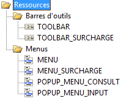

La fenêtre d’édition des ressources affiche un arbre du type suivant :

Cet arbre comprend les éléments suivants :
Dossier Ressources.
Ce dossier comporte les deux sous-dossiers Barres d’outils et Menus.
Dossier Barres d’outils.
Ce dossier inclut toutes les barres d’outils du fichier masques d’écran courant, classées par ordre alphabétique.
Dossier Menus.
Ce dossier inclut tous les menus du fichier masques d’écran courant, classés par ordre alphabétique.
En plus des fonctions d'édition de ressources spécifiques, les fonctions suivantes sont disponibles pour vous déplacer dans l’arbre et pour fermer ou ouvrir un dossier (fonctions standard de Windows concernant les arbres) :
Ouverture du dossier sélectionné par la touche Flèche à droite.
Fermeture du dossier sélectionné par Flèche à gauche.
Ligne suivante par Flèche en bas.
Ligne précédente par Flèche en haut.
Première ligne par Home.
Dernière ligne par End.
Descente d’un niveau par Flèche à droite.
Remontée d’un niveau par Flèche à gauche.
Un écran vers le bas par Page-Down.
Un écran vers le haut par Page-Up.